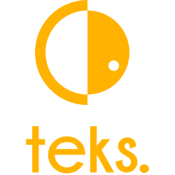

tEKS¶



tEKS is a set of Terraform / Terragrunt modules designed to get you everything you need to run a production EKS cluster on AWS. It ships with sensible defaults, and add a lot of common addons with their configurations that work out of the box.
 the v5 and further version of this project have been completely revamp and now offer a skeleton to use as a base for your infrastructure projects around EKS. All the modules have been moved outside this repository and get their own versioning. The old README is accessible here
the v5 and further version of this project have been completely revamp and now offer a skeleton to use as a base for your infrastructure projects around EKS. All the modules have been moved outside this repository and get their own versioning. The old README is accessible here
Terraform/Terragrunt¶
- Terraform implementation is available in the
terraformfolder. - Terragrunt implementation is available in the
terragruntfolder.
Requirements¶
Terraform¶
Terragrunt¶
Main purposes¶
The main goal of this project is to glue together commonly used tooling with Kubernetes/EKS and to get from an AWS Account to a production cluster with everything you need without any manual configuration.
What you get¶
A production cluster all defined in IaaC with Terraform/Terragrunt:
- AWS VPC if needed based on
terraform-aws-vpc - EKS cluster base on
terraform-aws-eks - Kubernetes addons based on
terraform-kubernetes-addons: provides various addons that are often used on Kubernetes and specifically on EKS. - Kubernetes namespaces quota management based on
terraform-kubernetes-namespaces: allows administrator to manage namespaces and quotas from a centralized configuration with Terraform.
Everything is tied together with Terragrunt and allows you to deploy a multi cluster architecture in a matter of minutes (ok maybe an hour) and different AWS accounts for different environments.
Curated Features¶
The main additionals features are the curated addons list, see here and in the customization of the cluster policy
Enforced security¶
- Default PSP is removed and sensible defaults are enforced
- All addons have specific PSP enabled
- No IAM credentials on instances, everything is enforced with IRSA or KIAM
- Each addons is deployed in it's own namespace with sensible default network policies
Out of the box monitoring¶
- Prometheus Operator with defaults dashboards
- Addons that support metrics are enable along with their
serviceMonitor - Custom grafana dashboard are available by default.
Helm v3 provider¶
- All addons support Helm v3 configuration
- All charts are easily customizable
Other and not limited to¶
- priorityClasses for addons
- use of [
kubectl-provider], no more local exec and custom manifest are properly handled - lot of manual stuff have been automated under the hood
Requirements¶
Terragrunt is not a hard requirement but all the modules are tested with Terragrunt.
Examples¶
terraform/live folder provides an opinionated directory structure for a production environment with an example using
Additional infrastructure blocks¶
If you wish to extend your infrastructure you can pick up additional modules on the particuleio github page. Some modules can also be found on the clusterfrak-dynamics github page.
Branches¶
main: Backward incompatible with v1.X but compatible with v2.X, releases bumped to v3.X because a lot has changed.release-1.X: Compatible with Terraform < 0.12 and Terragrunt < 0.19. Be sure to target the same modules version.release-2.X: Compatible with Terraform >= 0.12 and Terragrunt >= 0.19. Be sure to target the same modules version.
License¶